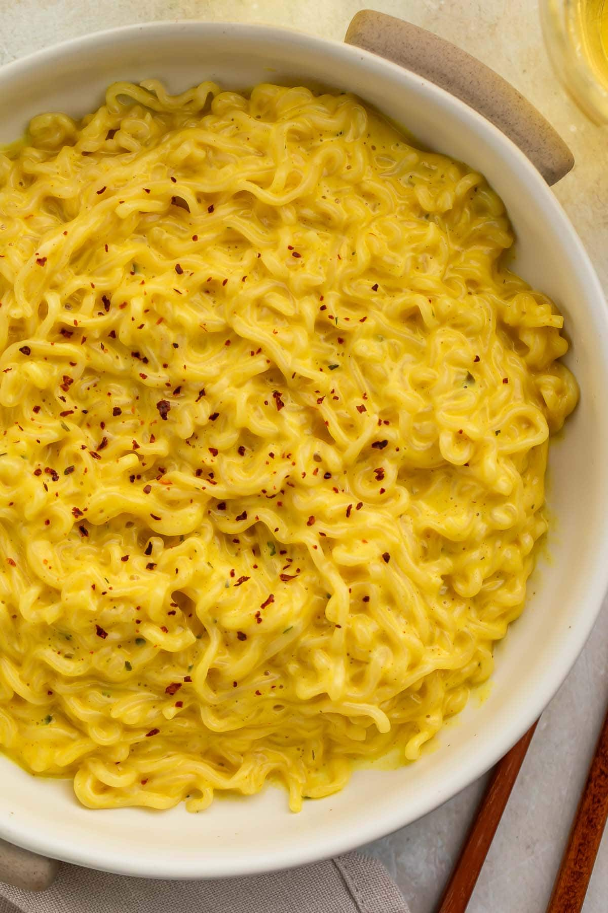

Cheesey Ramen Recipe

Description:
One of the simplest yet most tasty and affordable snacks to make. Be it a substitute for lunch or dinner, or just a snack you eat during midday.
Ingredients:
- One packet of ramen (of your choosing)
- One/Two slices of cheese
- Steel bowl
- Chilli flakes
- Oregano
- 200ml Milk
- Fork
Steps:
- Fill the steel bowl with water and keep it for boiling
- Add the packet of ramen and cook it
- Drain the water from the steel bowl
- Add 200ml of milk
- Add the slice(s) of cheese to the ramen and cover the bowl. Let it sit for a while
- Mix well and eat
Homepage